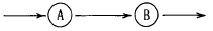
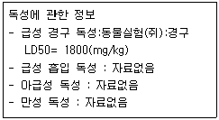
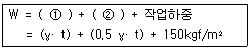

산업안전산업기사 (2004-09-05 기출문제)
1과목: 산업안전관리론
1. 작업을 하고 있을 때 걱정거리, 고민거리, 욕구불만 등에 의해 정신을 빼앗기는 것에 해당되는 것은?
- 의식의 과잉
- 의식의 중단
- 의식의 우회
- 의식수준의 저하
(정답률: 80%)

2. 다음 중 교육의 주체(Subject of Education)는?
- 강사
- 수강자
- 교재
- 교육방법
(정답률: 81%)
3. 작업에 수반되는 피로의 예방과 대책으로서의 수단이 아닌 것은?
- 작업부하를 크게 할 것
- 정적 동작을 피할 것
- 작업정도를 적절하게 할 것
- 운동시간을 적당히 할 것
(정답률: 90%)
4. A공장의 도수율이 10 이고 강도율이 1.5라고 하면 이 공장의 종합재해지수(FSI)는?
- 2.74
- 3.74
- 3.87
- 5.74
(정답률: 59%)
5. 다음 중 위험관리(Risk Management) 기법으로 적합하지 않은 것은?
- 위험의 제거(Remove)
- 위험의 회피(Avoid)
- 위험의 전가(Transfer)
- 위험의 확인(Identify)
(정답률: 37%)
6. B기업체에서 1000명의 노동자가 1주간에 40시간, 년간 50주를 노동하는데 1년에 80건의 재해가 발생하였다. 이 가운데 노동자들이 질병 기타 이유로 인하여 총근로 시간 중 5% 결근하였다. 이 기업체의 도수율은 약 얼마인가?
- 35.⑤
- 42.11
- 57.21
- 68.35
(정답률: 43%)
7. 안전에 관한 지식이나 기술의 지속을 위하여 실시되어야 하는 교육은?
- 태도교육
- 기능교육
- 반복 안전교육
- 지식교육
(정답률: 38%)
8. 생산의 양과 질의 저하를 지표로 하여 알 수 있는 피로는 어느 것인가?
- 주관적 피로
- 생리적 피로
- 정신적 피로
- 객관적 피로
(정답률: 52%)
9. 효율적인 안전 관리를 위해서는 4가지의 기본관리 cycle을 갖춰 활동을 되풀이함으로서 안전 관리의 수준이 향상 된다. 다음 중 관리 cycle 요소가 아닌 것은?
- 계획(plan)
- 예산(budget)
- 실시(do)
- 조치(action)
(정답률: 73%)
10. 산업재해의 기본원인 4M을 설명한 내용 중 틀린 것은?
- Man(인간) : 팀워크, 커뮤니케이션
- Machine(기계) : 본질안전화, 표준화, 점검· 정비
- Media(매개체) : 환경측정, 작업관리
- Management(관리) : 적성배치, 교육· 훈련
(정답률: 61%)
11. 직속상사가 현장에서 업무상의 개별교육이나 지도훈련을 하는 교육의 형태는?
- ATT
- TWI
- O.J.T
- Off the J.T
(정답률: 66%)
12. 학습의 전개 단계에서 주제를 논리적으로 체계화함에 있어 필요한 사항이 아닌 것은?
- 간단한 것에서 복잡한 것으로
- 부분적인 것에서 전체적인 것으로
- 미리 알려져 있는 것에서 미지의 것으로
- 많이 사용하는 것에서 적게 사용하는 것으로
(정답률: 63%)
13. 인간행동과 인간의 조건 및 환경조건의 관계를 레빈은 B=f(PㆍE)로 표시했다. f를 설명한 것은?
- 함수관계
- 작업환경적 조건
- 인간의 성격적 조건
- 심리적 환경
(정답률: 86%)
14. 한 사람의 근로년수를 40년간으로 하고 1일 8시간 근로와 과외시간 근로를 연간 100시간으로 계산하여 총100000 시간으로 가정한다면, 재해도수율이 25.13인 사업장에서 한 근로자가 평생 근무하는 경우에 평생 작업기간 중 사고를 낼 회수는 약 얼마인가?
- 2.513회
- 25.13회
- 251.3회
- 2513회
(정답률: 37%)
15. 다음 중 1년에 1회 이상 자체검사를 정기적으로 실시해야 하는 기계, 기구는?
- 전단기
- 승강기
- 크레인
- 화학설비
(정답률: 28%)
16. 산업안전 표지의 종류 및 기본모형과 색채에서 사용되는 예로서 안내표지 중 세안장치의 기본 모형 형태는?
- 사각형
- 원형
- 삼각형
- 마름모형
(정답률: 45%)
17. 대규모 기업에서 많이 채택되고 있는 안전 조직 방식은?
- 라인방식
- 스탭방식
- 라인-스탭방식
- 인간, 기계계방식
(정답률: 83%)
18. 다음 중 리더쉽 유형과 의사결정의 관계를 바르게 연결 한 것은?
- 개방적리더-리더중심
- 민주적리더-종업원중심
- 민주적리더-전체집단중심
- 독재적리더-전체집단중심
(정답률: 77%)
19. 안전대책의 중심적인 내용에 대해서는 3E라고 하는 것이 강조되어 왔다. 3E와 거리가 가장 먼 것은?
- Engineering
- Exchange
- Education
- Enforcement
(정답률: 68%)
20. 의식 레벨의 단계분류 중 정상적인 작업이나, 순조롭게 일을 처리하는 등 정신이 안정되어 있는 상태이기 때문에 무심코 잘못된 동작을 일으킬 가능성이 있는 인간의 의식 단계는?
- phase Ⅰ
- phase Ⅱ
- phase Ⅲ
- phase Ⅳ
(정답률: 39%)
2과목: 인간공학 및 시스템안전공학
21. 실내표면에서 반사율이 가장 낮아야 하는 것은?
- 벽
- 천정
- 바닥
- 가구
(정답률: 76%)
22. 신체의 안정성을 증대시키는 조건이 아닌 것은?
- 기저(基底)를 작게 한다.
- 몸의 무게 중심을 낮춘다.
- 몸의 무게 중심을 기저(基底)내에 들게 한다.
- 모우멘트의 균형을 생각한다.
(정답률: 46%)
23. 인체의 피부와 허파로 부터 하루에 600g의 수분이 증발된다면 이러한 증발로 인한 열손실율은 몇 와트(Watt)나 되겠는가? (단, 물 1g을 증발시키는데 필요한 에너지는 2410 J/g 이다.)
- 약 15 Watt
- 약 17 Watt
- 약 19 Watt
- 약 21 Watt
(정답률: 51%)
24. 산업재해예방에 필요한 인간실수 예방기법이 아닌 것은?
- FMEA
- 작업상황 개선
- 요원변경
- 체계의 영향감소
(정답률: 29%)
25. 다음 중 판단과정의 착오 원인이 아닌 것은?
- 자신 과신
- 능력 부족
- 정보부족
- 감각차단현상
(정답률: 37%)
26. 진동이 인간 성능에 끼치는 일반적인 영향과 거리가 먼 것은?
- 진동은 진폭에 비례하여 시력을 손상하며 10-25Hz의 경우 가장 심하다.
- 진동은 진폭에 비례하여 추적 능력을 손상하며 5Hz 이하의 낮은 진동수에서 가장 심하다.
- 안정되고 정확한 근육 조절을 요하는 작업은 진동에 의해서 저하된다.
- 반응시간, 감시, 형태 식별 등 주로 중앙 신경 처리에 달린 임무는 진동의 영향에 민감하다.
(정답률: 36%)
27. 시스템 안전을 위한 일반적인 분석기법이 아닌 것은?
- 고장형태와 영향분석 (FMEA)
- 결함수 분석 (FTA)
- 사상수분석(ETA)
- 고장률 분석
(정답률: 55%)
28. 통제기기에서 통제기기의 변위를 15 ㎜ 움직여서 표시계기의 지침이 25 ㎜ 움직였다면 이 기기의 통제 표시비는 얼마인가?
- 0.4
- 0.5
- 0.6
- 0.7
(정답률: 67%)
29. 다음 중 음의 크기를 나타내는 Phon과 Sone의 관계를 맞게 나타내는 것은?
- Sone치=2(Phon치 - 40)/10
- Phon치=2(Sone치 - 40)/10
- Sone치=2(Phon치 - 40)/10
- Phon치=2(Sone치 - 40)/10
(정답률: 33%)
30. 시스템안전성 평가기법들의 일반적인 장점을 나열한 것이다. 해당되지 않는 것은?
- 가능성을 정량적으로 다룰 수 있다.
- 시각적 표현에 의해 정보전달이 용이하다.
- 원인, 결과 및 모든 사상들의 관계가 명확해진다.
- 연역적 추리를 통해 결함사상을 빠짐없이 도출한다.
(정답률: 45%)
31. 위험을 통제하는데 있어 취해야 할 첫단계 조치는?
- 작업원을 선발하여 훈련한다.
- 덮개나 격리등으로 위험을 방호한다.
- 점검과 필요한 안전보호구를 사용하도록 한다.
- 설계 및 공정 계획시에 위험을 제거토록 한다.
(정답률: 59%)
32. 인간에 대한 감시(monitoring) 방법 중 간접적인 방법은?
- 생리학적 감시방법
- 시간적 감시방법
- 반응에 대한 감시방법
- 환경의 감시방법
(정답률: 40%)
33. 일반적으로 가장 신뢰도가 높은 시스템은?
- 직렬
- 병렬
- n중K구조
- 다수결구조
(정답률: 65%)
34. 시스템안전 분석을 위하여 가장 필요한 것은?
- 단계별 비용 효과 분석
- 시스템의 종합 개념적 모델
- 계획을 수행하기 위한 세부 기술
- 데이터를 처리 할 수 있는 통계방법
(정답률: 31%)
35. 어떤 작업자의 배기량을 더글라스백으로 측정하였더니 10분간 200L이었고, 배기량을 가스분석기로 분석한 결과 O2 : 16%, CO2 : 4%였다. 분당 산소 소비량은?
- 1.⑤L/분
- 2.⑤L/분
- 3.⑤L/분
- 4.⑤L/분
(정답률: 31%)
36. 수공구 설계원리와 거리가 먼 것은?
- 손목은 곧게 유지되도록 설계한다.
- 손가락 동작의 반복을 피하도록 설계한다.
- 손잡이는 손바닥의 접촉면적이 작도록 설계한다.
- 공구의 무게를 줄이고 사용시 균형이 유지되도록 한다.
(정답률: 75%)
37. 인간이 현존하는 기계를 능가하는 기능은?
- 귀납적 추리를 한다.
- 주위가 소란하여도 효율적으로 작동한다.
- 암호화된 정보를 신속하게 대량으로 보관한다.
- 입력신호에 대해 신속하고 일관성 있는 반응을 한다.
(정답률: 72%)
38. 인간과 기계와의 신뢰성을 연결했을 때의 공식이다. 맞는 것은?

- B + A× (1 - A)
- A + B× (1 - B)
- A × B
- A - B× (1 - A)
(정답률: 63%)
39. 다음 중 인간공학의 목적이라고 할 수 없는 것은?
- 안전성 향상과 사고방지
- 작업의 능률성과 생산성 향상
- 환경의 쾌적성
- 인간의 신뢰성 회복
(정답률: 51%)
40. 다음 중 인간-기계 체계의 주목적은?
- 피로의 경감
- 경제성과 보건성
- 신뢰성 향상과 사용도 확보
- 안전의 최대화와 능률의 극대화
(정답률: 69%)
3과목: 기계위험방지기술
41. 산업용 로봇의 작동범위내에서 그 로봇에 관하여 교시 등의 작업을 할 때 작업시작전 점검사항이 아닌 것은? (단, 로봇의 동력원을 차단하고 행하는 경우 제외)
- 제동장치의 기능
- 비상정지장치의 기능
- 매니플레이터 작동의 이상유무
- 주요부품의 볼트 풀림 유무
(정답률: 30%)
42. 다음 중 프레스의 방호장치에 해당되지 않는 것은?
- 손쳐내기식(Sweep Guard)
- 수인식(Pull Out)
- 게이트 가드(Gate Guard)
- 롤 피드(Roll Feed)
(정답률: 66%)
43. 금속으로 된 봉(棒)이 있다. 단면의 모양이 원형이며, 단면적은 100 mm2 이다. 이 금속봉에 인장력 20000(N)을 가했을 때의 인장응력의 크기는?
- 50 (N/mm2)
- 100 (N/mm2)
- 200 (N/mm2)
- 400 (N/mm2)
(정답률: 72%)
44. 와이어 로프로 중량물을 달아 올릴 때 다음 중 로프에 가장 힘이 작게 걸리는 각도는?
- 30°
- 60°
- 90°
- 120°
(정답률: 55%)
45. 왕복운동을 하는 운동부와 고정부사이에서 형성되는 위험점이 아닌 경우는?
- 프레스금형 조립부위
- 전단기의 누름판 및 칼날부위
- 연삭숫돌과 작업대
- 선반및 평삭기의 베드 끝부위
(정답률: 49%)
46. 절삭속도가 100m/min이하에서 강이나 경합금같은 재료를 절삭할 때 가공물이 가공경화되어 단단해지면서 공구날 끝에 칩이 쌓이며 부착되는 현상을 무엇이라고 하는가?
- 구성인선(build-up edge)
- 글레이징(glazing)
- 크리이프(creep)
- 로딩(loading)
(정답률: 32%)
47. 와이어로프를 절단하여 고리걸이 용구를 제작할 때 절단 방법중 옳은 것은?
- 가스용단
- 전기용단
- 기계적
- 부식
(정답률: 40%)
48. 다음 확동식 클러치 프레스에 부착된 양수기동식 방호장치에 있어서 클러치 맞물림 개수가 4군데, 300SPM(Stroke Per minute)일 때 양수기동식 조작부 설치 거리는 어느 것인가?
- 360mm
- 260mm
- 240mm
- 340mm
(정답률: 43%)
49. 고온에서 정하중을 받게 되는 기계구조 부분의 설계시 허용응력을 결정하기 위한 기초강도로 고려되는 것은?
- 항복점
- 피로한도
- 극한강도
- 크리이프강도
(정답률: 38%)
50. 기계설비의 안전조건중 외관의 안전화에 해당되는 조치는 어느 것인가?
- 고장 발생을 최소화 하기 위해 정기점검을 실시 하였다.
- 강도의 열화를 생각하여 안전율을 최대로 고려하여 설계하였다.
- 전압강하, 정전시의 오동작을 방지하기 위하여 자동제어 장치를 설치하였다.
- 작업자가 접촉할 우려가 있는 기계의 회전부를 덮개로 씌우고 안전색채를 사용하였다.
(정답률: 72%)
51. 풀림방지용으로 사용되는 너트는?
- 나비너트
- 둥근너트
- 캡너트
- 홈붙이너트
(정답률: 46%)
52. Fail safe 구조의 기능면에서 설비 및 기계장치의 일부가 고장이 난 경우 기능의 저하를 가져오더라도 전체기능은 정지하지 않고 다음 정기 점검시까지 운전이 가능한 방법은?
- Fail-passive
- Fail-soft
- Fail-active
- Fail-operational
(정답률: 46%)
53. 호이스트 사용시에 안전수칙으로 맞지 않는 것은?
- 짐을 매단 채 방치하지 않는다.
- 규격 이상의 하중을 걸지 않는다.
- 주행시는 사람이 짐에 타서 운전한다.
- 짐의 무게 중심의 바로 위에서 달아 올린다.
(정답률: 76%)
54. 플레이너(planer)작업시 안전에 관한 설명으로 옳지 않은 것은?
- 이동테이블에 방호울을 설치한다.
- 에이프런을 돌리기 위하여 해머로 치지않는다.
- 플레이너의 프레임 중앙부에 있는 피트(pit)에는 덮개를 씌운다.
- 테이블과 고정벽이나 다른 기계와의 최소 거리가 70cm이하인 경우는 그 사이를 통행할 수 없게 한다.
(정답률: 47%)
55. 다음 중 컨베이어의 안전기준으로 부적합한 것은?
- 정전이나 전압강하등에 의한 화물 또는 운반구의 이탈 및 역주행을 방지할 수 있어야 한다.
- 컨베이어에 근로자의 신체 일부가 말려들 위험이 있을 때 운전을 즉시 정지시킬수 있어야 한다.
- 컨베이어에서 화물이 낙하로 인하여 근로자에게 위험을 미칠 우려가 있을 때에는 컨베이어등에 덮개 또는 울을 설치하여야 한다.
- 컨베이어에는 벨트 부위에 근로자가 접근할 때의 위험을 방지하기 위하여 급정지 장치 및 과부하방지 장치를 부착하여야 한다.
(정답률: 42%)
56. 가스용접장치에서 가스의 역류와 역화를 방지하는 방호 장치는?
- 토치
- 가스발생기
- 압력조정기
- 건식안전기
(정답률: 35%)
57. 숫돌이 파열되는 경우가 제일 많은 것은?
- 스위치를 넣는 순간
- 스위치를 끄는 순간
- 정전이 되는 순간
- 드레싱을 하는 순간
(정답률: 27%)
58. 기계 고장율의 기본모형 중 고장율이 가장 낮은 것은?
- 우발고장
- 피로고장
- 초기고장
- 마모고장
(정답률: 40%)
59. 샤틀(shuttle)이 부착되어 있는 직기에 설치하여야 할것은?
- 덮개
- 울
- 북이탈방지장치
- 가이드롤
(정답률: 25%)
60. 재료강도 시험 중 항복점을 알 수 있는 시험은?
- 인장시험
- 충격시험
- 압축시험
- 마모시험
(정답률: 57%)
4과목: 전기 및 화학설비위험방지기술
61. 비교적 저압 또는 상압에서 가연성의 증기를 발생하는 유류를 저장하는 탱크에서 외부에 그 증기를 방출하기도하고, 탱크내에 외기를 흡입하기도 하는 부분에 설치하는 안전장치는?
- 후레임어레스터(flame arrester)
- 파열판(rupture disk)
- 스팀드레프(steamdraft)
- 후레아스택(flarestack)
(정답률: 29%)
62. 차동식 분포형 열전기식 감지기의 작동원리는 2종의 금속을 양단에 결합하여 양단에 온도차를 주었을 때 기전력이 발생하는 원리를 이용한 것이다. 이 원리를 무엇이라고 하는가?
- Thomson effect
- Seebeck effect
- Hall effect
- Pinch effect
(정답률: 31%)
63. 정전용량 10μ F인 물체에 전압을1000V로 충전하였을 때 물체가 가지는 정전에너지는 몇 Joule인가?
- 50
- 0.5
- 14
- 5
(정답률: 44%)
64. 통전전압이 22kV 초과 33kV 이하인 고압에서의 활선작업시 작업자가 유지해야 할 접근한계 거리는?
- 10cm
- 30cm
- 50cm
- 70cm
(정답률: 41%)
65. 인체의 감전시 위험도에 영향을 주는 사항이 아닌 것은?
- 전원의 종류
- 접속기기의 종류
- 통전시간
- 통전경로
(정답률: 53%)
66. 1종장소와 2종 장소에 적합한 구조로서 용기내부에 아크 또는 고열이 발생하여 폭발이 일어날 경우에 용기가 폭발 압력에 견디고 외부의 폭발성 가스에 인화될 위험이 없도록 한 방폭의 구조는?
- 내압방폭구조(d)
- 비점화방폭구조(n)
- 안전증방폭구조(e)
- 특수방진방폭구조(SDP)
(정답률: 56%)
67. 누전차단기의 설치 환경조건으로 적당하지 않은 것은?
- 비나 이슬에 젖지 않은 장소로 할 것
- 표고 1000[m]이상의 장소로 할 것
- 먼지가 적은 장소로 할 것
- 이상한 진동 또는 충격을 받지 않은 장소로 할 것
(정답률: 74%)
68. 건설현장에서 사용하는 임시배선의 안전대책으로서 부적당한 것은?
- 임시배선은 다심케이블을 사용하지 않아도 된다.
- 배선은 반드시 분전반 또는 배전반에서 인출해야 한다.
- 지상 등에서 금속관으로 방호할 때는 그 금속관을 접지해야 한다.
- 모든 전기기기의 외함은 접지시켜야 한다.
(정답률: 54%)
69. 에틸에테르와 에틸알코올이 4:1로 혼합한 증기의 폭발하한계(%)를 Le chatelier 법칙을 이용하여 계산하면 얼마 인가?(단, na=0.8, nb=0.2로 두고 에틸에테르와 에틸알코올의 폭발 한계치는 각각 xa=1.9%, xb=4.3%이다.)
- 2.14%
- 3.14%
- 4.14%
- 5.14%
(정답률: 39%)
70. 이산화탄소 소화기의 사용시 주의할 점이 아닌 것은?
- 이산화탄소 소화기는 호스를 잡으면 동상의 위험이 있으므로 반드시 손잡이를 잡고 방출시킨다.
- 액화탄산가스가 공기중에서 이산화탄소로 기화하면 체적이 급격하게 팽창하므로 질식에 주의한다.
- 이산화탄소는 반도체설비와 반응을 일으키므로 통신기기나 컴퓨터설비에는 사용을 해서는 안된다.
- 이산화탄소의 주된 소화작용은 질식작용이므로 산소의 농도가 15%이하가 되도록 약제를 살포한다.
(정답률: 57%)
71. 폭발을 방지하기 위한 안전장치와 가장 관계가 적은 것은?
- 스톱 밸브
- 안전 밸브
- 블로우 밸브
- 긴급차단장치
(정답률: 17%)
72. 자기반응성물질에 대한 설명 중 옳지 않은 것은?
- 가연성물질이면서 그 자체 산소를 함유하므로 자기 연소를 일으킨다.
- 연소속도가 대단히 빨라서 폭발적으로 반응한다.
- 가열· 마찰· 충격에 의해 폭발하기 쉽다.
- 다량의 주수에 의한 냉각소화 또는 건조한 모래를 이용한 피복소화가 효과적이다.
(정답률: 57%)
73. 화학설비에서 단위 공정 시설 및 설비간의 적당한 안전 거리는 설비의 외면으로 부터 몆 m 이상 인가?
- 10m
- 8m
- 5m
- 2m
(정답률: 40%)
74. 교류아크 용접기의 재해방지를 위해 쓰이는 것은?
- 자동전격방지 장치
- 정전압 장치
- 정전류 장치
- 리미트 스위치
(정답률: 61%)
75. 아세틸렌 용기의 취급시 주의사항과 거리가 먼 것은?
- 용기는 충격을 가하거나 전도되지 않도록 한다.
- 용기는 높은 온도의 장소에 놓는 것을 피해야 한다.
- 용기의 이동시 눕혀서 안전하게 이동한다.
- 압력조정기와 호스등의 접속부에서 가스가 누설되는지 주의하며, 비눗물로 누출여부를 조사한다.
(정답률: 71%)
76. 어떤 물질에 대한 독성을 알아보기 위하여 물질안전보건자료(MSDS:Material Safety Data Sheet)를 찾아 보았더니 아래와 같았다. 아래 자료에 의하면 이 물질은 산업안전보건법상 어디에 해당하는가?

- 이 물질은 독성물질이다.
- 이 물질은 발암성물질이다.
- 이 물질은 독성물질이 아니다.
- 급성 흡입 독성에 대한 자료가 없으므로 알 수 없다.
(정답률: 33%)
77. 프로판(C3H8) 가스의 공기중 완전연소 조성농도는 몇 vol%인가?
- 4.02
- 5.02
- 6.02
- 7.02
(정답률: 42%)
78. 정전 작업시의 안전조치라 할 수 없는 것은?
- 개방된 개폐기의 표시나 시건을 한다.
- 검전기로 정전유무를 확인한다.
- 잔류전하는 그대로 보존한다.
- 단락 접지를 실시한다.
(정답률: 68%)
79. 소화방법에 따른 소화원리를 잘못 연결한 것은?
- 물을 뿌린다. - 냉각소화
- 모래를 뿌린다. - 질식소화
- 촛불을 불어서 끈다. - 억제소화
- 담요를 덮는다. - 질식소화
(정답률: 69%)
80. 다음 중 폭발성 물질에 해당하는 것은?
- 유기과산화물
- 칼슘
- 황
- 알킬알루미늄
(정답률: 42%)
5과목: 건설안전기술
81. 암반사면의 파괴 형태가 아닌 것은?
- 평면파괴
- 압축파괴
- 쐐기파괴
- 전도파괴
(정답률: 32%)
82. 달비계 설치시 달기체인의 사용 금지 기준이 아닌 것은?
- 체인의 길이가 제조 당시보다 5% 이상 늘어난 것
- 균열이 있거나 심하게 변형 된 것
- 공칭지름이 7% 이상 감소한 것
- 링의 단면지름의 감소가 제조 당시 보다 10%를 초과 한 것
(정답률: 32%)
83. 파이프 서포트를 동바리로 사용할 때 준수 사항으로 틀린 것은?
- 파이프 서포트의 연결은 3본까지만 허용된다.
- 지주의 고정등 지주의 미끄러짐을 방지하기 위한 조치를 하여야 한다.
- 높이가 3.5m를 초과하는 때에는 2m이내마다 수평연결재를 2개방향으로 설치한다.
- 깔목의 사용, 콘크리트 타설, 말뚝박기 등 지주의 침하를 방지하기 위한 조치를 하여야 한다.
(정답률: 40%)
84. 비계의 높이가 2m이상인 작업장소에 설치하는 작업발판의 설치 기준으로 옳지 않은 것은?
- 발판재료간의 틈은 3cm 이하로 하여야 한다.
- 작업발판의 폭은 30㎝ 이상이어야 한다.
- 추락의 위험성이 있는 장소에는 안전난간을 설치하여야 한다.
- 작업발판재료는 2 이상의 지지물에 연결하거나 고정 하여야 한다.
(정답률: 48%)
85. 피뢰침 설치시 준수해야 할 사항 중 옳지 않은 것은?
- 피뢰침의 보호각은 45° 이하로 할 것
- 피뢰침을 접지하기 위한 접지극과 대지간의 접지저항은 10Ω 이하로 할 것
- 피뢰침과 접지극을 연결하는 피뢰도선은 단면적이 30mm2 이상인 동선을 사용하여 확실하게 접속할 것
- 피뢰침은 가연성 가스 등의 누설될 우려가 있는 밸브ㆍ게이지 및 배기구 등의 시설물로부터 1m 이상 떨어진 장소에 설치할 것
(정답률: 28%)
86. 흙막이지보공의 조립도에 명시되어야 할 사항이 아닌 것은?
- 부재의 배치
- 부재의 치수
- 버팀대 긴압의 정도
- 설치 방법과 순서
(정답률: 47%)
87. 공정계획 중 PERT/CPM에 관한 설명 중 옳지 않은 것은?
- 변화에 대한 신속한 대책수립이 가능하다.
- 작업전.후 관계가 파악이 용이하다.
- 네트워크에 의한 종합관리의 형태를 갖는다.
- 주공정과 여유공정에 의한 공사 통제가 불가능하다.
(정답률: 61%)
88. 옹벽이 외력에 대하여 안정하기 위한 검토 조건이 아닌 것은?
- 전도
- 활동
- 좌굴
- 지반 지지력(침하)
(정답률: 44%)
89. 해체공사의 시공계획에 포함되는 내용으로 가장 거리가 먼 것은?
- 해체물 재활용계획
- 해체 순서
- 공정 계획
- 공법의 선정
(정답률: 59%)
90. 강관비계에 있어서 비계기둥간의 적재하중은 몇 kg 을 초과하지 않아야 하는가?
- 200kg
- 300kg
- 400kg
- 500kg
(정답률: 51%)
91. 지면보다 휠씬 높은 곳을 정확히 굴착하고자 할 때 가장 적합한 굴착장비는?
- 파워쇼벨
- 백호
- 드래그라인
- 크램셀
(정답률: 59%)
92. 양끝이 힌지(Hinge)인 기둥에 하중을 가하면 기둥이 수평방향으로 휘게 된다. 이 때의 복원한계상태를 무엇이라 하는가?
- 피로한계
- 파괴한계
- 좌굴
- 부재의 안전도
(정답률: 44%)
93. 유해· 위험방지계획서를 제출해야할 사업에 해당되지 않는 것은?
- 굴착 깊이가 12m인 굴착하는 공사
- 최대지간이 15m인 교량건설 공사
- 지상높이가 35m인 건축물 공사
- 터널길이가 1km인 터널건설 공사
(정답률: 59%)
94. 다음 중 양중용 장비가 아닌 것은?
- 승강기
- 이동식 크레인
- 간이리프트
- 스크레이퍼
(정답률: 63%)
95. 가설자재의 안전율의 정의로 가장 알맞은 것은?
- 재료의 파괴응력도와 허용응력도의 비이다.
- 재료가 받을 수 있는 허용응력도이다.
- 재료의 변형이 일어나는 한계응력도이다.
- 재료가 받을 수 있는 허용하중을 나타내는 것이다.
(정답률: 50%)
96. 작업장의 계단에 대한 설명 중 옳지 않은 것은?
- 계단을 설치할 때는 그 폭을 50cm 이상으로 한다.
- 3m를 초과하는 계단에는 너비 1.2m 이상의 계단참을 설치하여야 한다.
- 계단 및 계단참의 강도는 안전율 4 이상으로 한다.
- 바닥면으로부터 2m 이내의 공간에 장애물이 없도록 한다.
(정답률: 52%)
97. 콘크리트 타설시 붕괴사고를 예방하기 위하여 사전에 거푸집동바리 구조계산을 실시하여야 한다. 이 때 연직 하중은 다음과 같이 산정한다. ( )에 알맞은 것은? (단, γ:콘크리트 단위중량(kgf/m3), t:슬래브 두께(m))

- ①충격하중, ②풍하중
- ①고정하중, ②적설하중
- ①고정하중, ②충격하중
- ①적설하중, ②풍하중
(정답률: 52%)
98. 추락방지용 방망의 그물코 크기가 10cm인 신품 매듭방망의 인장강도는 얼마 이상이어야 하는가?
- 60kg
- 120kg
- 180kg
- 200kg
(정답률: 41%)
99. 차량계 건설기계에 해당되지 않은 것은?
- 불도저
- 항타기
- 파워셔블
- 타워크레인
(정답률: 38%)
100. 사다리식 통로의 구조에 대한 설치 기준으로 틀린 것은?(오류 신고가 접수된 문제입니다. 반드시 정답과 해설을 확인하시기 바랍니다.)
- 발판의 간격은 동일하게 한다.
- 사다리의 상단은 걸쳐놓은 지점으로부터 60cm 이상 올라가도록 한다.
- 통로의 길이가 8m 이상인 때에는 7m 이내마다 계단참을 설치하여야 한다.
- 통로의 기울기는 80° 이내로 하여야 한다.
(정답률: 50%)